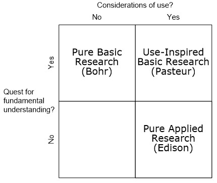
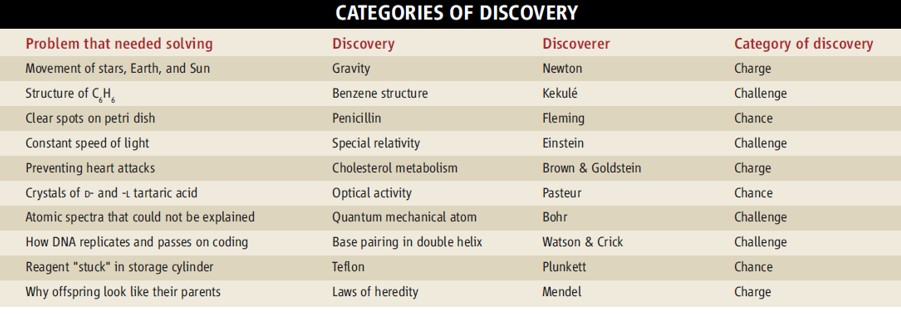
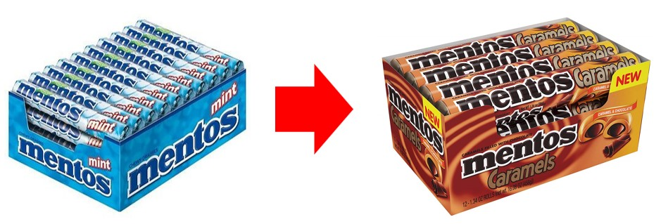
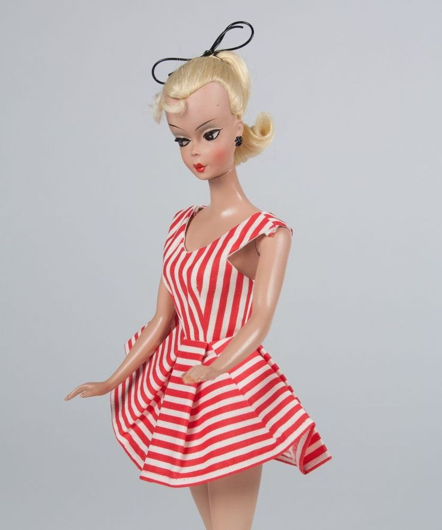
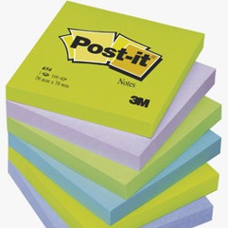
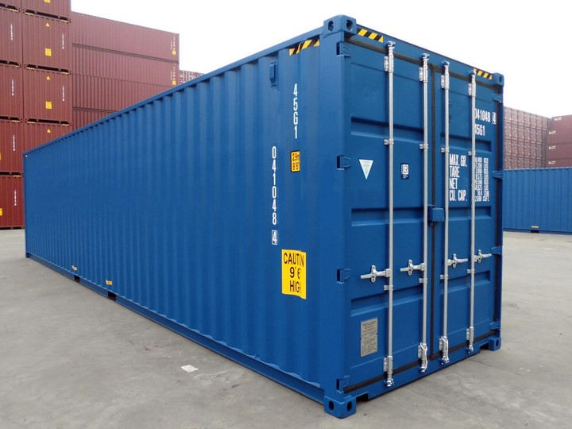
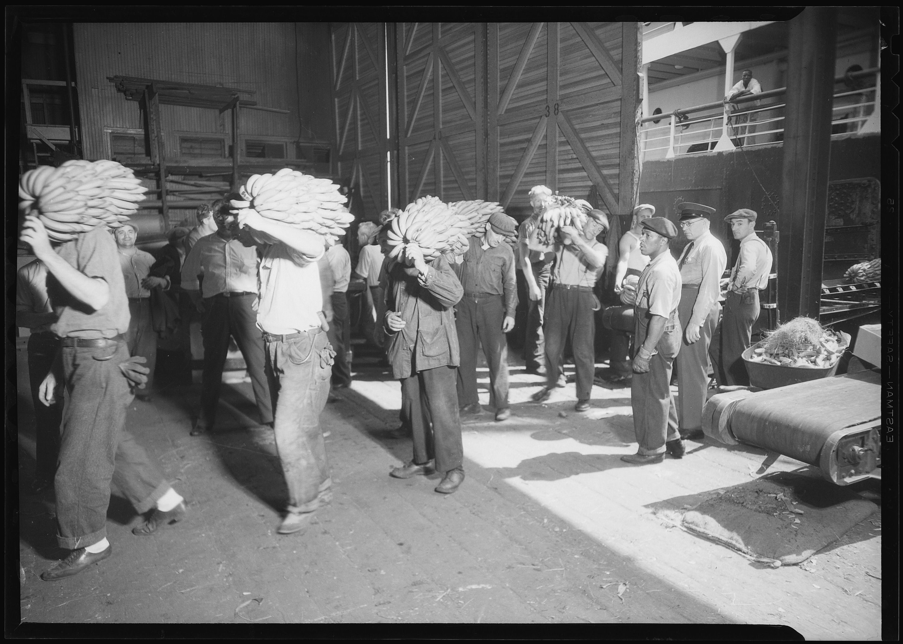
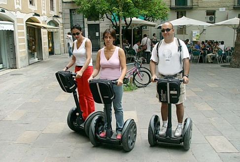
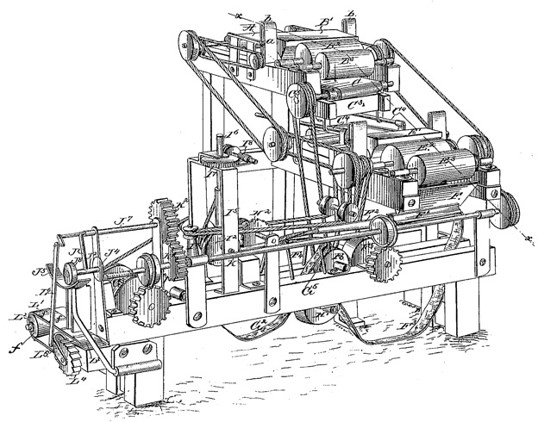

2 The Innovation Process
This week’s lecture focuses on the following pieces of content:
- Stoke’s research quadrants
- Cha-cha-cha theory of scientific studies
- Types of innovation
- Characteristics of innovation
- Seven sources of innovation
- Innovation case studies
2.1 Stoke’s Research Quadrants
Research is the main way by which knowledge is produced.
Stokes’ 1997 model of research quadrants can be used to justify the kind of research that scientists conduct. A scientist is used to represent a particular kind of research1.
2.1.1 Bohr’s Quadrant
Research here is done for the sake of discovery (i.e., for knowledge purposes).
There is no attention to the research’s practicality
2.1.2 Edison’s Quadrant
“Edison never allowed himself or those working with him in Menlo Park five minutes to consider the underlying side of the significance of what they were discovering in their headlong rush toward commercial illumination.
The value and even the mark of true science consists, in my opinion, in the useful inventions which can be derived from it.”
– Gottfried Wilhelm Leibniz
Research in this quadrant is done for the sake of applications. When Thomas Edison invented the light bulb, he wasn’t interested in the science behind the device, but the potential applications and revenue that could be generated from the light bulb.
2.1.3 Pasteur’s Quadrant
This quadrant was a mix of both Bohr’s and Edison’s quadrants: research in this quadrant was a mix of both practical applications and discovering new knowledge.
Pasteur not only studied the disease that was ruining southern France’s silkworm industry, but also anthrax, rabies, and fermentation and brewing in the beer industry.
2.2 Cha-Cha-Cha Theory
This theory states that scientific discoveries can be categorized into three types: charge, challenge, and change.

Charge solves problems that are obvious (e.g., cure malaria), but whose solutions must be seen from a novsel perspective.
Challenge discoveries are discoveries that arise from an accumulation of facts that cannot be explained by current science. A new concept or theory may be needed to explain the discovery.
Chance discoveries are discoveries that arise out of chance (e.g., Pasteur’s discovery of optical isomers).
2.3 Types of Innovation
“Innovation distinguishes between a leader and a follower.”
– Steve Jobs
“Leave the beaten track occasionally and dive into the woods. Every time you do so you will be certain to find something that you have never seen before.”
– Bell Labs’ Motto
An innovation is a series of activities that begin when an idea is conceived. This idea then undergoes a series of research, development, engineering, design, market analysis, management decision making, and so on before ending at product realization.
Innovations are like creations and exploitations of new flowers.
“Innovations, like flowers, start from tiny seeds and have to be nurtured carefully until they blossom, then their essence has to be carried elsewhere for the flowers to spread.
Innovations can grow wild, springing up weed-like despite unfavourable circumstances.
And some conditions - soil, climate, fertilizer, the layout of the garden - produce larger and more abundant flowers.”
– Professor himself
Innovations can be broadly divided into several categories:
Product Innovations
This is the introduction of a good or a service that is new or is significantly improved in some way (i.e., technical specifications, components and materials, incorporated software, user friendliness, or other functional characteristics).
Such innovations can be based on new ideas and technologies (or a combination of existing and new ideas and technologies).
Process Innovations
These are the implementation of a new or significantly improved production or delivery method (which often includes changes in techniques, equipment, and / or software).
Such innovations are often made to decrease unit costs, to increase quality, or to produce or deliver significantly improved products.
These innovations also deal with the steps in making a product.
Service Innovations
Service Kiosks at McDonalds’ These are intangible methods of serving users at a new level of performance - for instance, new service concepts.
Radical Innovations
The MP3 Logo These are big and major changes in products.
The MP3 audio system is one major example. Prior to the invention of MP3, music was listened to communally.
Incremental Innovations

Transition from Mentos Mint Candy to Mentos Caramels These apply existing knowledge to improve products.
2.3.1 Innovation as Work
Innovation is the work of knowing, not doing. It’s also an effort to purposeful, forced change in an enterprise’s economic or social position.
“I am not pleading with you to make changes. I am telling you you have got to make them – not because I say so, but because old Father Time will take care of you if you don’t change. Advancing waves of other people’s progress sweep over the unchanging man and wash him out. Consequently, you need to organise a department of systematic change-making.”
– Charles F. Kettering
Innovation requires knowledge, ingenuity, and boldness. If a person lacks persistence and commitment, then talent, knowledge, and ingenuity will not be useful.
“Businessmen go down with their businesses because they like the old way so well they cannot bring themselves to change. One sees them all about - men who do not know that yesterday is past, and who woke up this morning with their last year’s ideas.”
– Henry Ford
Innovation is a specific function of entrepreneurship, whether that be in the form of an existing business, a public service institution, or a new venture started by an individual.
2.3.2 Characteristics of Innovation
Kanter (1998) suggested the following traits of most, if not all innovations:
Uncertainty
Sources of innovation may be unpredictable - the goal of innovation may have little to base itself off of.
Innovations make progress in spurts in unforseen moments.
A Long Journey
The costs of innovation may overrun and the results are highly uncertain.
Analysts have estimated that it may take years for a business to see any returns on their innovations.
Knowledge-Intensive
The innovation process generates new knowledge and in doing so, uses human intelligence and creativity. This learning curve is steep.
Efforts during innovation are vulnerable to leaving because of the loss of knowledge and experience (i.e.,
Controversial
Innovations are always competitive - they provide an alternative course of action.
On several occassions, an innovation may be a threat to peoples’ interests (whether that “interest” be a salesperson receiving high commissions or whatnot).
Political problems are often the primary cause for the failure of new venture departments in corporations.
Imperialistic
An innovation is also capable of crossing boundaries.
There is also evidence that the best ideas or interdisciplinary (i.e., they benefit from broader perspectives and from information outside of the idea responsible for the innovation).
2.3.3 Example #1: Scrabble
In 1931, Alfred Mosher Butts was a young, out-of-work architect who was seeking a means of making money.
Butts was interested in anagrams and crossword puzzles (i.e., his source of inspiration) - after further analysis, he found that games of his generation fell into one of three categories:
- Number-based games
- Move-based games
- Word-based games
He eventually created a game that used a grid and words. Butts wanted his game to have both skill and luck (with a stronger emphasis on skill). Butts also realized that of the 26 characters in the alphabet, that not all of them were used frequently.
To find out the relative frequencies, he painstakingly studied the front pages of the New York Times, doing letter-by-letter counts (i.e., innovation is knowledge-intensive).
This enabled Butts to assign values to each letter in his game.
From 1932 to 1938, Butts made the sets by hand and gave them to friends; most game manufacturers in the US turned down Butts’ idea.
In 1943, Butts met marketing genius James Brunot - Brunot made some refinements to Butts’ game.
Eventually, Brunot and his wife made an agreement with Selchow & Righter, a much more established game manufacturer to make the game (as Brunot could not keep up with game production himself).
By 1954, more than 4 million sets of the game had been sold; the game was also available in other languages (e.g., Spanish, Italian, French, etc).
In 1972, Selchow & Righter purchased the game and trademarked “Scrabble”.
Hasbro now supports the National Scrabble Association (It was formerly Coleco, but they went bankrupt).
2.3.4 Example #2: Barbie Dolls
In 1956, American businesswoman Ruth Handler was vacationing in Switzerland until she came across Bild Lilli: a prostitute doll with long legs and heavy makeup.

The first barbie doll came out in 1959.
2.4 Sources of Innovation
There are seven sources, some of which are inside or outside a company:
2.4.1 Inside a Company
These include:
Unexpected

A Stack of Post-it Notes Spencer Silver was trying to create a super strong adhesive, but instead discovered a weak adhesive that sticks to paper and can be lifted off without tearing the paper
Silver told his colleague Art Fry about the new adhesive.
Fry was singing in a church choir and had bookmarked his hymnal with little pieces of paper but when it was time to sing until they fell out. Fry thought that Silver’s adhesive would be the ticket for a better bookmark.
Fry went to work the next day, ordered a sample of the adhesive and began coating it on paper, carefully coating only the edge of the paper so that the part protruding from his hymnal wouldn’t be sticky. Fry also realized that the bookmark could also be a note.
In 1978, 3Mers descended on Boise, Idaho, with samples for what would later be called the “Boise Blitz”. Boise was selected because it wasn’t too big a city.
Samples were handed out, and 3M discovered that more than 90% of the people who tried them would buy them.
At the request of 3M marketers, Shirley Tholander (secretary to Lew Lehr, chairman of the 3M board) sent a letter to her executive secretary peers at Fortune 100 companies and enclosed a product sample.
Incongruities
An Incongruity is an incompability - something that appears very different to the point of change.
In 1912, Charles Franklin Kettering invented the electric starter.
Before the electric starter, this boost was provided by a crank at the front of the car. Women and men of smaller stature had trouble working the crank without help. In addition, the crank was dangerous to operate, and some drivers were injured while cranking the car – this became a source of innovation.
The impetus for the electric starter came from a realisation of the incongruity between the demographics of car buyers versus the demographic composition of the world at large.
Without an easy way to start the car, car manufacturers were only selling to half2 the population!
Process Needs
SBS Transit’s Iris NextBus and PostBox are good examples.
Industry Market and Structures
Industry structures can change, creating tremendous opportunities for innovation.
In the past, photographic film needed to be “processed” in a dark room.
In the digital world, processing can be self-serviced.
2.4.2 Outside a Company
These include:
Demographic Changes
The graying of many societies is a demographic change that is looming.
One impact of this will be the increasing need for robots to do routine housework (and so on).
Changes in Public Perception
Cirque du Soleil (i.e., CdS) capitalised on the changes in public perception on the use of animals in circuses (in addition, the cost of the animals and their training, medical care, housing, insurance, and transportation was very high).
Traditional circus shows have a series of unrelated acts, but each Cirque du Soleil creation has a theme and story line, somewhat resembling a theater performance.
New Knowledge and Scientific Discoveries
There is a protracted time span between the emergence of new knowledge and its distillation into usable technology.
Then there is another long period before this new technology appears in the marketplace in products, processes or services.
To become effective, innovation of this sort demands not one kind of knowledge but
2.5 Innovation Case Study #1: Shipping Containers

The shipping container was invented by Malcolm Purcell McLean. MacLean was also responsible for founding pan-Atlantic services.
2.5.1 Prior to the Shipping Container’s Fruition
Armies of ill-paid and ill-treated workers called longshoremen would help unload and load supplies onto merchant ships. The whole (un)loading process would take a day - shipping costs were hence expensive (i.e., a four-thousand mile voyage for a shipment might consume about 50% of its costs for just two ten-mile movements).
“In the first forty months of World War II, the U-boats sank 2,177 merchant ships totalling 11,045,284 tons, while the number of merchant ships lost to all other causes was negligible in comparison.”
– Syrett, 1993, page 1.
Many German “U-boats” (i.e., submarines) also sank many merchant ships during the Battle of the Atlantic.
In response to this, the US navy built more than 2400 “liberty ships” between 1941 and 1945. These ships were small enough to avoid being sunk so that little cargo would be lost if the ship was sunk.
After the war, the US navy sold about 450 “liberty ships” to their merchant lines. However, these “liberty ships” were cramped and had odd dimensions - longshoremen needed to figure out how to fit cargo in these conditions. These “liberty ships” wasted time and money from the shipowners’ perspectives.
2.5.1.1 More About Longshoremen

Longshoremen were individuals who saw themselve as tough, independent men who were doing a tough job. They had reputations as brawlers and drinkers.
The work that they did was brutal and physically dangerous, so much so that there were many injuries, and in some cases, fatalities.
Longshoremen would also work in all sorts of weather conditions and would also compete among themselves for work. This entire process meant kickbacks, flattery, and begging. Because of this, their income was irregular and longshoremen would be loyal to their co-workers, not the company that they were working for.
Strikes were also frequent due to poor pay and poor working conditions. In Britain alone, these strikes led to 1 million man-days lost between 1948 to 1951 and another 1.3 million in 1954. These strikes also led to two major problems:
- Pilfering: longshoremen would end up stealing the cargo that they were supposed to load.
- Resistance to anything that might eliminate jobs.
2.5.2 McLean’s Background and Starting His Own Trucking Company
MacLean was born in Maxton, North Carolina. His mother first taught him how to do business by giving him eggs to sell on commission.
McLean graduated from high school in 1931 and started working at a grocery store to stock shelves. He eventually became the manager of a gas station in a nearby town.
McLean learned that drivers were being paid $5 an hour just to transport gas to the station.
2.5.2.1 McLean Trucking Company
In March 1934, McLean started the McLean Trucking Company. In 1935, he started off with two trucks and a truck trailer. He also employed nine truck drivers who owned their own rigs.
In 1940, he owned about 30 trucks and grossed about $230,000.
In 1945, he owned 162 trucks and in 1946, made a revenue of about $2.2 million.
In 1953, McLean noticed that the highways were becoming increasingly congested. He was also concerned that domestic ship lines were allowed to buy war-surplus cargo ships for a low price from the government.
In September 1955, McLean sold off his trucking company for about $14 million!
2.5.3 McLean’s First Container Ship
On 26 April, 1956, 58 aluminium truck bodies were loaded aboard an ageing tanker Ideal-X that was moored in Newark, New Jersey. Ideal-X then sailed into Houston.
On 1 April, 1964, the Port of Singapore Authority (i.e., PSA) was formed to take over the functions, the assets, and the liabilities of the Singapore harbor board.
2.5.3.1 What is a Shipping Container?
A shipping container is an aluminum or a steel box that held up by rivets and welds - it has a wooden floor and two enormous doors at both ends.
The container cheapened transportation costs; it was also a part of a highly efficient and seamless system for shipping cargo across the world.
The container could also be loaded onto the Ideal-X in seven minutes (i.e., using a crane). The railroad and trucking business attempted to compete with McLean’s shipping containers. Between April and December, 44 voyages were created; consequently, the tanker’s capacity increased from 58 to 60 containers (before it increased to 62 containers).
2.5.4 New York’s Decline
McLean’s containers made New York ports obsolete. During the 1920s, the trucking industry had already made New York’s ports obsolete.
In 1952, traffic leading to piers was so bad that pier-bound vehicles were banned from the Twelfth Avenue.
2.6 Innovation Case Study #2: Segways

Kamen (i.e., the inventor of the segway) was at a local mall and was watching a man struggle to get his wheelchair over a curb. He was disturbed by what he saw. He thought: “we can put people on the moon and travel to the depths of the ocean, but we cannot get a wheelchair over a curb?”
The more he thought about the limitations faced by people in wheelchairs - no eye-level conversations, no trips to the beach or anywhere else without sidewalks, no reaching the top shelf at the grocery, no possibility of defeating the absolute barrier of stairs - the more he became offended as an engineer
2.6.1 Kamen’s Invention
Fred-iBOT was a wheelchair that could roll through gravel and sand, go up curbs, and even climb stairs. It would change the lives of many.
The project was funded by Johnson & Johnson, but did not take off likely due to cost issues.
2.6.2 About Dean Kamen
He was born in Rockville Center, Long Island, New York, in 1951. He attended college at Worcester Polytechnic Institute in Massachusetts.
He also owned a business, Independent Prototype, and did a project for Cordis, a medical company, through which he met the founder, William Murphy. He made about $60,000 a year
Bart, a medical student at Harvard, suggested that he work on a drug-infusion pump.
From there, Kamen started a new company - AutoSyringe - where he designed the first portable insulin pump (which freed diabetics from their condition’s limitations).
2.6.2.1 Starting a Family Business
Kamen’s brother, Mitch and Mitch’s friends became assemblers for the pump.
His mother tested circuit boards and kept the books.
His father drew the illustrations for the manual.
He enlisted the help of Worcester Polytechnic’s students and professors to help him improve the design of his inventions.
Kamen also moved to New Hampshire to evade New York’s high taxes.
Eventually, Kamen would sell the pump to Baxter Healthcare for about $30 million in 1982 (when Kamen was 31 years old).
Kamen would then go onto buy an airplane, a helicopter, and an island in Long Island Sound. He then founded his own R&D company DEKA (i.e., short for DEan KAmen).
Kamen’s first spinoff company Teletrol installed climate control systems for large industrial and commercial buildings
2.6.3 Kamen’s Attitude Regarding Failure
“In study after study, of composers, basketball players, fiction writers, ice-skaters, concert pianists, chess players, master criminals,” writes the neurologist Daniel Levitin, “this number comes up again and again.
Ten thousand hours is equivalent to roughly three hours a day, or 20 hours a week, of practice over 10 years …. No one has yet found a case in which true world-class expertise was accomplished in less time. It seems that it takes the brain this long to assimilate all that it needs to know to achieve true mastery.”
– Dean Kamen
In 1987, Baxter Healthcare approached Kamen to improve its kidney dialysis machine - it was noisy, expensive, heavy (180 lb) and bulky!
Kamen urged his engineers not to limit themselves to what they thought was feasible, and he did not hold failures against his engineers if they learned something along the way.
His philosophy was that no experiments was useless.
2.7 Innovation Case Study #3: Bonsack Machine

During 1876, Allen and Ginter (i.e., A&G) were employing hundreds of girls as rollers. This was a problem as not only was it difficult to oversee such a vast amount of workers, but there would also be inconsistencies with the quality of labor.
A&G then offered a price of $75000 to anybody who could invent an automatic cigarette rolling machine.
2.7.1 James Albert Bonsack
On September 4, 1880, Bonsack - a teenager tinkerer - got a patent for his invention. His machine could turn out about 200 to 212 cigarettes per minute (roughly 40 to 50 workers’ output).
2.7.1.1 Bonsack’s Machine’s Performance
A&G ultimately rejected the machine for the following reasons:
- They feared that cigarettes were traditionally hand-crafted.
- They feared that the machine would be too efficient, leaving them with mountains of unsold cigarettes.
- Overall managerial timidity associated with the handling of the dismissals of unneeded workers.
Washington Duke and his son, James Buchanan Duke, decided to install Bonsack’s machine in their factories. In 1889, Duke & Sons sold a billion cigarettes, and in 1890, formed the American Tobacco Company,
The machines brought about a tremendous reduction in the cost of manufacturing cigarettes.
By 1884, the Bonsack Machine was producing from 100,000 to 120,000 cigarettes per day, the equivalent of the production of forty to fifty hand workers.
Duke, like other producers, initially overcame any popular prejudice against the machines in a very simple way: he used them in the greatest secrecy and the public remained unaware of their widespread application for years.
The Duke company began to produce most of its cigarettes by machine in 1885, encountering little of the consumer resistance its rivals had anticipated. Duke’s application of the Bonsack Machines revolutionized the business of making cigarettes; the profits of the Duke company rose during subsequent years.
This was also what happened to Leica.
2.5.5 Social Impact of Shipping Containers
When the industry fled New York, the number of manufacturing jobs fell.
The Brooklyn Navy Yard closed in 1966, and Brooklyn residents abandoned the borough in droves. Brooklyn’s population fell by 14% between 1971 and 1980.